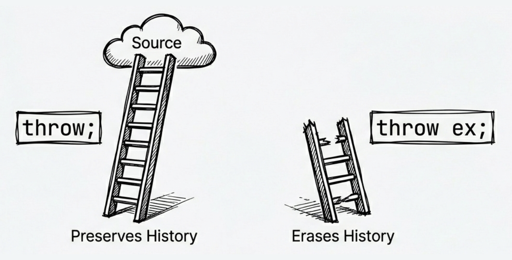

Chapter 5: Error handling and resource management
Writing code that runs is not hard. Writing robust code that doesn’t crash unexpectedly requires a solid understanding of error handling and resource management. In the .NET world, exceptions are the standard mechanism for handling errors, while the IDisposable interface is the core of resource management.
These are also the two topics where developers most often stumble:
- Error handling: Overusing exceptions hurts performance, but never using them lets errors spread silently. How do you balance correctness and performance?
- Resource management: Forgetting to release resources can cause memory leaks, file locks, and exhausted database connections. How do you ensure resources are always released, even when exceptions occur?
- Asynchronous disposal: With async code everywhere, the classic
Disposeis not always enough. When should you useDisposeAsync?
This chapter follows two main threads: how to represent and propagate errors when something goes wrong, and how to release resources reliably after you are done with them. We will cover:
- Golden rules and common anti-patterns for exception handling
- When to use
try-catch-finally usingstatements and theIDisposablepattern- Async resource management (
IAsyncDisposableandawait using) - Standard Dispose pattern details (with finalizer support)
Once you understand these practices, you will have a clearer sense of which failures should become exceptions, which ones are better expressed as return values, and which resources need explicit cleanup.
5.1 Exception handling
Exception handling isn’t just about wrapping code in try-catch blocks. When used correctly, it improves both debugging and maintainability. When used poorly, it can degrade performance and mask the root cause of a problem.
C# uses structured exception handling, which separates error-handling logic from the normal flow. This also raises common questions:
- When should you throw exceptions? If user input is invalid, should you throw or return a value?
- How should you catch exceptions? What is wrong with
catch (Exception)? - How should you rethrow exceptions? What happens if you do
throw ex;? - How do you guarantee resource cleanup? Even when exceptions occur, you still need to close files and connections.
We will start with exception handling and look at several choices that directly affect readability and debugging:
- Exceptions are only for exceptional cases (Tester-Doer and Try-Parse patterns)
- Catch specific exceptions instead of generic ones
- Use exception filters (
when) to improve debugging - Concise
throwexpressions - Rethrow correctly (preserve stack traces)
- Use
finallyto ensure resource cleanup
.NET 9 performance improvements
.NET 9 introduced a new exception handling implementation based on NativeAOT, improving performance by 2x to 4x. Even when exceptions must be used, their performance overhead is noticeably smaller than before. Still, for expected errors (like user input), you should prefer
TryParseand similar patterns.
Exceptions are only for exceptional cases
Here is a typical pattern: wrap the normal flow in a try block and handle exceptions in catch:
try
{
... // normal flow
}
catch
{
... // runs when something unexpected happens
}You can read this as: “try to run some code and see if anything goes wrong. If something unexpected happens, stop the normal flow and pass the captured exception to the catch block to handle it.”
The golden rule is: do not use exceptions for normal control flow. Exception handling in the .NET runtime has overhead (modern runtimes optimize this, but generating a stack trace still takes time). The following example shows two approaches:
// Not recommended: exceptions for control flow
try
{
int value = int.Parse(input);
}
catch (FormatException)
{
// Handle format error
}
// Recommended: use TryParse (the Try-Parse pattern)
if (int.TryParse(input, out int value))
{
// Success
}
else
{
// Handle error
}Think of it this way: exceptions should handle unexpected situations, not expected failures. If user input can be invalid (which is normal), you should not use exceptions for control flow. Use TryParse and similar APIs instead. It avoids exception overhead and makes the intent clearer. We will cover the Tester-Doer pattern later.
Catch specific exceptions
Avoid catching everything (catch (Exception ex)) unless you are at the application boundary (for example, logging an unhandled exception). If an intermediate layer catches everything, it may swallow programming bugs or errors the caller could have handled, making the real problem harder to trace. Catching specific exceptions lets you respond precisely to different error cases.
There are several ways to write catch clauses:
// Catch a specific exception and access the exception object
catch (FileNotFoundException ex)
{
Console.WriteLine(ex.Message);
}
// Only care about the type, no exception variable needed
catch (IOException)
{
// Handle I/O errors
}
// Catch all exceptions (usually only at the outermost layer)
catch
{
// Exceptions not handled by earlier catch clauses end up here
}When you catch specific exceptions, you can provide tailored responses—like distinguishing between a missing file and a permission error—rather than a vague “something went wrong” message. This makes your application’s behavior more predictable and user-friendly.
Exception filters
Starting in C# 6, you can use the when keyword to filter exceptions. This is more efficient than checking inside a catch block and rethrowing because the when condition is evaluated before stack unwinding. If the condition fails, the exception simply continues searching for another handler without first entering a catch block and being rethrown.
try
{
MakeRequest();
}
catch (HttpRequestException ex) when (ex.StatusCode == HttpStatusCode.NotFound)
{
// Only handle 404 Not Found
Console.WriteLine("Resource not found");
}
catch (HttpRequestException ex)
{
// Handle other HTTP errors
Console.WriteLine($"Request failed: {ex.Message}");
}The key advantage is that filters run before stack unwinding. That means the original call stack and local state are still available while the filter is being evaluated; when a debugger is attached and configured to break on the exception, it is also more likely to show the original throw site instead of a location after control has entered a catch block.
In other words, when not only makes the catch condition more precise; it can also preserve more context while you diagnose a problem.
Rethrow correctly
If you need to rethrow an exception from a catch block, always use throw; instead of throw ex;.
try
{
// ...
}
catch (Exception ex)
{
Log(ex);
// Incorrect: resets the stack trace, making debugging harder
// throw ex;
// Correct: preserves the original stack trace
throw;
}The detail is easy to miss: throw ex is legal C#, but it changes the stack information stored on the exception. The difference is:
throw: Preserves the original stack trace, so you can still locate where the exception first happened.throw ex: Resets the stack trace. The caller cannot see the original location in the exception’sStackTrace. If you need to present a higher-level error to the caller, wrap the original exception and keep it inInnerExceptioninstead of destroying the original stack trace withthrow ex.

Call stack and stack trace
A stack trace is a string that lists every method in the current call stack and the line number of each method (if debug symbols are available).
A call stack is a memory structure that stores the sequence of method calls for a thread, including parameters and local variables.
Throw expressions
Starting with C# 7, throw can be used as an expression, not just as a statement. This lets you throw in more contexts:
// In expression-bodied members
public string GetName() => throw new NotImplementedException();
// In a ternary operator
string ValidateInput(string input) =>
input != null ? input.Trim() :
throw new ArgumentNullException(nameof(input));
// In the null-coalescing operator
string result = userInput ??
throw new ArgumentNullException(nameof(userInput));The common idea in these examples is that an exception no longer has to appear only as a standalone throw statement. It can live where a value is expected. For checks where “no value” means execution should not continue, this keeps the failure condition close to the value being used.
Source code: DemoThrowExpressions
Note
throw null;does end up producing aNullReferenceException, but it is obscure and has no practical value. Avoid it in real code.
ArgumentNullException.ThrowIfNull (.NET 6+)
The previous section showed throw expressions combined with ?? to validate null parameters. Starting with .NET 6, there is an even more concise dedicated method:
// Traditional approach
void ProcessData(string data)
{
if (data == null)
{
throw new ArgumentNullException(nameof(data));
}
// Process data
}
// .NET 6+ simplified approach
void ProcessData(string data)
{
ArgumentNullException.ThrowIfNull(data);
// Process data
}This ThrowIfNull helper not only makes the code shorter, but also carries the parameter name into the exception object even when you do not write nameof(data) yourself; the compiler supplies the argument name at the call site.
For example, when data is null, ArgumentNullException.ThrowIfNull(data) still knows that the problematic parameter name is data, which makes the error message clearer.
Later .NET versions added more helpers. Relevant docs:
- ArgumentException.ThrowIfNullOrEmpty: Throw if the string is
nullor empty. - ArgumentException.ThrowIfNullOrWhiteSpace: Throw if the string is
nullor whitespace.
For numeric parameter validation, .NET 8 introduced many static methods on ArgumentOutOfRangeException, making code more explicit and readable:
ArgumentOutOfRangeException.ThrowIfNegative(value): Throw if the value is negative.ArgumentOutOfRangeException.ThrowIfZero(value): Throw if the value is zero.ArgumentOutOfRangeException.ThrowIfGreaterThan(value, other): Throw ifvalueis greater thanother.ArgumentOutOfRangeException.ThrowIfLessThan(value, other): Throw ifvalueis less thanother.
These methods are especially useful when validating IDs, indices, or quantities—and they automatically include the parameter name in the error message for better diagnostics.
Wrap exceptions and preserve inner exceptions
Sometimes you want to throw a different exception type, such as translating low-level details into a higher-level message. In that case, keep the original exception as the InnerException property of the new one:
DateTime StringToDate(string? input)
{
ArgumentNullException.ThrowIfNull(input);
try
{
return DateTime.Parse(input);
}
catch (FormatException ex)
{
// null is handled by ThrowIfNull; only wrap format errors here
throw new ArgumentException("Invalid date string.", nameof(input), ex);
}
}This way, different failures stay clearly separated: a null argument results in ArgumentNullException, while a malformed date string is wrapped as a higher-level ArgumentException. The caller gets an API-friendly error message, can identify the offending parameter through ParamName, and can still inspect the low-level cause (FormatException) via InnerException.
Key properties of Exception
Knowing where an exception came from and why it happened is usually more useful than merely knowing that something failed. System.Exception is the base class for all exceptions, and the following example shows the properties you will use most often while debugging:
try
{
// Code that may throw
}
catch (Exception ex)
{
// Message: short error description
Console.WriteLine($"Message: {ex.Message}");
// StackTrace: full call stack showing the exception path
Console.WriteLine($"Stack trace: {ex.StackTrace}");
// InnerException: wrapped inner exception (if any)
if (ex.InnerException != null)
{
Console.WriteLine($"Inner exception: {ex.InnerException.Message}");
}
}When reading exception details, start with Message to understand the surface error, then use StackTrace to find where it occurred. If the exception has been wrapped, InnerException is often the clue closest to the root cause.
Exception inheritance hierarchy
After seeing the common properties, it is easier to understand why the inheritance hierarchy matters when choosing what to catch. System.Exception is the common ancestor of all exceptions. In the inheritance tree, you will often see SystemException and ApplicationException, but in practice it is more important to understand the meaning of each concrete exception type.
SystemException: This is the base type for many built-in .NET exceptions, such as
ArgumentException,NullReferenceException, andIOException. That does not mean they all represent the same kind of problem. Exceptions such asArgumentExceptionandIOExceptionare often expected and recoverable in the right context, whileNullReferenceExceptionusually indicates a programming bug and should not be your primary target forcatch.ApplicationException: It was originally intended as a base class for application-defined exceptions, but modern .NET does not especially recommend using it. For custom exceptions, inheriting directly from
Exceptionis usually the better choice.
Understanding this hierarchy helps explain why catch (Exception) catches everything, and it is also a reminder that broad catches should have a clear reason. For custom exceptions, you usually do not need to inherit from ApplicationException.
Extra: Arithmetic overflow checks
By default, integer overflow at runtime usually does not throw. It wraps around instead. For example, if you first store
int.MaxValuein a variable and then evaluatemax + 1, the result becomesint.MinValue. However, if the overflow happens in a compile-time constant expression, that expression is evaluated in a checked context by default, so the compiler reports the overflow as an error. If you explicitly place it insideunchecked, overflow is allowed instead. If you want to detect overflow explicitly, such as in money calculations, use acheckedblock:checked { int balance = int.MaxValue; balance++; // Throws OverflowException }If you want to explicitly ignore overflow checks, use
unchecked. This is rare in typical business apps, but useful to know for special cases.
finally clause: ensure resource cleanup
The code in a finally block runs whether or not an exception occurs. That makes it ideal for cleanup:
StreamReader? reader = null;
try
{
reader = new StreamReader("app.config");
var content = reader.ReadToEnd();
Console.WriteLine(content);
}
catch (FileNotFoundException ex)
{
Console.WriteLine($"File not found: {ex.Message}");
}
finally
{
// Always runs
reader?.Dispose();
}Here is how it works:
- Any line inside the
tryblock could throw. When an error occurs, the rest of thetryblock is skipped. Control jumps immediately to a matchingcatch(if one exists), and then thefinallyblock runs. - Even if no
catchhandles the exception, thefinallyblock still runs before the exception propagates up the call stack. This provides a language-level guarantee that your cleanup code runs, unless the process is forcibly terminated first.
Source code: DemoExceptionHandling
Finalizer: the last line of defense
Besides finally, C# provides a finalizer, which runs before the GC reclaims an object. Its syntax looks like a constructor with a ~ prefix:
class ResourceWrapper
{
~ResourceWrapper() // Finalizer
{
// Release unmanaged resources
}
}Finalizers have significant restrictions and costs:
- Slows allocation and collection
- Extends object lifetime (cleanup waits for a later GC)
- Execution order and timing are unpredictable
- Should not reference other finalizable objects
- Should not throw or block
Therefore, avoid finalizers unless necessary. In most cases, the IDisposable pattern is enough. Finalizers are typically needed only when wrapping unmanaged handles (such as native pointers returned by Windows APIs), because these are not things the GC can directly close for you.
Also, teaching examples sometimes put Console.WriteLine inside a finalizer just to make the execution flow visible, but that should remain only in demonstration code. In real code, avoid doing I/O, logging, or any other work in a finalizer that could fail or block. If you add diagnostic output inside Dispose(bool disposing), keep it on the disposing == true path only.
If you truly need both IDisposable and a finalizer, use the standard Dispose pattern introduced in the next section. That pattern separates the explicit cleanup path from the GC-backed fallback path.
5.2 Resource management
In .NET, memory is managed automatically by the garbage collector (GC). Think of it as a janitor who regularly cleans your desk by removing objects you no longer use.
However, the janitor cannot enter the server room or open the safe. Likewise, the GC can reclaim managed memory, but it does not automatically release external resources held behind an object, such as file handles, database connections, sockets, or native handles. Those resources must be released explicitly with Dispose. Therefore, IDisposable is not just about unmanaged resources; it ensures that critical resources are cleaned up promptly rather than waiting for ordinary garbage collection.

Common resource management challenges include:
- Forgetting to release resources: Leads to file locks, memory leaks, and exhausted connection pools
- Cleanup during exceptions: How do you ensure resources are released when code throws?
- Async cleanup: In async methods, how do you release resources that require async operations (like
FileStream.FlushAsync())? - Implementing IDisposable yourself: How do you implement the pattern correctly when a class owns unmanaged resources (with finalizer support)?
Next, we will start with the using syntax from the caller’s perspective, then move into the patterns you need when your own types manage resources:
usingstatements andusingdeclarations to ensure cleanup- The design of the
IDisposablepattern - Async cleanup with
IAsyncDisposableandawait using - The full standard Dispose pattern (including finalizer support)
- A practical anonymous disposal helper
Automatic cleanup with using
In the earlier finally example, we released the file resource with reader.Dispose(). This is common in .NET. The same idea applies to network connections, database connections, and other objects that wrap external resources. The object itself is managed by the GC, but the underlying resource often needs earlier, explicit cleanup through Dispose.
Because the standard try-finally-dispose pattern is long and ubiquitous, C# provides more concise syntax: first the using statement, and later the even more compact using declaration.
Let’s start with the earlier and easier-to-read form: the using statement. The compiler turns it into a try-finally block, ensuring Dispose is called even if exceptions occur.
// Traditional approach (nested block)
using (var file = File.OpenRead("data.txt"))
{
/*
Use file... (omitted)
*/
} // file.Dispose() is called hereThis was the standard style in early C#. Its strength is that the scope is explicit; its downside is that multiple resources can quickly create deeper nesting. C# 8 introduced a style that is now more common for many cases.
using declaration (C# 8)
C# 8 introduced using declarations, which do not require braces. The variable is disposed when the current scope ends. This reduces indentation.
if (File.Exists("data.txt"))
{
using var file = File.OpenRead("data.txt");
using var reader = new StreamReader(file);
var content = reader.ReadToEnd();
Console.WriteLine(content);
} // reader and file are disposed here, in reverse orderNote: Disposal happens in reverse declaration order (stack order). In the example above,
readeris disposed beforefile, which matches the dependency direction between those two resources.

Async disposal
The using syntax shown so far releases resources synchronously. However, with async programming, resource cleanup can also be I/O-bound (such as closing a stream or database connection). To handle these scenarios, C# 8 introduced the IAsyncDisposable interface and await using. Here is an example:
public async Task ProcessFileAsync(string path)
{
// Use await using to ensure DisposeAsync is called
await using var file = new FileStream(path, FileMode.Open);
// ...
}The key point in this code is that when execution leaves the scope, the compiler arranges to call DisposeAsync instead of the synchronous Dispose. If you are designing a type that performs asynchronous cleanup, implement IAsyncDisposable and let callers release it with await using.
Source code: DemoUsingStatements
Pay close attention to one detail: if you wrap an await using resource inside another wrapper that only implements IDisposable (for example, a StreamReader created with its default constructor), that wrapper may close the underlying resource synchronously first, because by default it also disposes the stream it wraps.
If you truly want the underlying FileStream to go through DisposeAsync, keep the wrapper from closing the inner stream (for example, by using leaveOpen: true), or apply await using directly to the underlying resource.
Why DisposeAsync?
With
FileStream, closing the file may need to flush buffered data to disk. If you useDispose, the flush is synchronous and can block, especially on network drives.DisposeAsyncensures the flush is async, improving throughput.Note
For more on
await usingandIAsyncDisposable, see Chapter 12, “Async Programming”, in the section “Async resource cleanup”.
Standard Dispose pattern (with finalizer support)
The previous sections showed how to use objects that implement IDisposable through the using syntax. Now let’s switch perspectives and look at how to implement the standard Dispose pattern when your own class needs to manage resources.
When a class implements the standard Dispose pattern, it usually provides a public Dispose() method and an overridable Dispose(bool disposing) method for inheritance. Add a finalizer only if the class directly owns unmanaged resources. The following example shows the full version with finalizer support:
public class ResourceHolder : IDisposable
{
private bool _disposed = false;
// Public Dispose method (non-virtual)
public void Dispose()
{
Dispose(disposing: true);
GC.SuppressFinalize(this); // Tell GC not to run the finalizer
}
// Protected virtual Dispose method (for subclasses)
protected virtual void Dispose(bool disposing)
{
if (_disposed) return;
if (disposing)
{
// Release managed resources (safe to reference other objects)
// Example: _managedResource?.Dispose();
}
// Release unmanaged resources (always run)
// Example: free handles, close native resources
_disposed = true;
}
// Finalizer (backup if Dispose was not called)
~ResourceHolder()
{
Dispose(disposing: false);
}
}Source code: DemoDisposePattern
This code is much longer than the earlier using examples because it describes how the type itself cleans up correctly. As you read the pattern, focus on these points:
disposingindicates the call source:true: Called fromDispose(), safe to access managed objects.false: Called from the finalizer, do not touch managed objects (they may be gone).
GC.SuppressFinalize(this): if the type has a finalizer, this tells the GC not to run it because cleanup already happened. If the type doesn’t have a finalizer, the call simply has no practical effect.protected virtual: allows subclasses to override and add cleanup logic.Prevent double disposal: use a
_disposedflag so cleanup runs only once.
Practical advice
For a sealed class that wraps only managed resources, a simplified
IDisposableimplementation without a finalizer or virtual method is sufficient. If the class is unsealed, it’s still a good idea to provideDispose(bool)for inheritance support. But a finalizer is only needed when the class directly owns unmanaged resources, and in practiceSafeHandleis usually the better option for wrapping them because it handles reliable release of the underlying handle.
Anonymous disposal
The Dispose pattern above is for classes that own resources themselves. But sometimes you just want to leverage using’s automatic cleanup on scope exit for short-lived state changes, without creating a full class. For example, you may want to pause events during an operation and resume them afterward:
// Less elegant approach
foo.SuspendEvents();
try
{
// Do work
}
finally
{
foo.ResumeEvents();
}
// Cleaner approach with using
using (foo.SuspendEvents())
{
// Do work
} // Events resume automaticallyBoth versions do the same work, but the using version binds “enter this temporary state” and “restore it when leaving” to the same scope, so the cleanup is harder to miss when reading the code. You can implement this with a small helper class:
public class Disposable : IDisposable
{
private Action? _onDispose;
public static Disposable Create(Action onDispose)
=> new Disposable(onDispose);
private Disposable(Action onDispose)
=> _onDispose = onDispose;
public void Dispose()
{
_onDispose?.Invoke();
_onDispose = null; // Prevent multiple calls
}
}Usage example:
class EventManager
{
private int _suspendCount;
public IDisposable SuspendEvents()
{
_suspendCount++;
return Disposable.Create(() => _suspendCount--);
}
private void FireEvent()
{
if (_suspendCount == 0)
{
// Fire event
}
}
}
// Let's see it in action
using (manager.SuspendEvents())
{
// Events paused
} // Events resume automatically hereHere, Disposable.Create receives a delegate and invokes it during Dispose. In other words, any “run this once when leaving the scope” action can be packaged as a small IDisposable object. This pattern is useful for:
- Temporary state changes (pause/resume)
- Scoped configuration changes (culture switches)
- Timing and tracing scopes
Source code: DemoAnonymousDisposal
5.3 Exceptions vs. error codes: when to use which
Not all errors should be handled with exceptions. When designing APIs, consider the caller’s needs.
We have already mentioned several times that an expected failure is not always a good fit for exceptions. Here is the decision point more explicitly: when should you throw exceptions, and when should you return an error code (or a boolean)? Poor choices lead to:
- Overusing exceptions: Worse performance, confusing control flow, and forcing callers to handle expected failures as “exceptions”
- Overusing error codes: Callers may forget to check errors, handling becomes scattered, and root causes become harder to track.
This section uses two common .NET patterns as the guide:
- Tester-Doer and Try-Parse patterns: how .NET avoids turning expected failures into exceptions
- API design considerations: when to throw vs. when to return error codes
- Practical guidance: when to provide a
TryXxxmethod
Tester-Doer and Try-Parse patterns
The .NET class library commonly offers both patterns, but they are not the same design.
// Tester-Doer: test first, then perform the operation that could throw
ICollection<int> numbers = GetNumbers();
if (!numbers.IsReadOnly)
{
numbers.Add(42);
}In the Tester-Doer pattern, one member tests whether an operation is safe or valid, and another member performs the operation. This helps when failure is common and you want to avoid paying exception costs repeatedly.
Another common design is the Try-Parse pattern:
// Parse: input is expected to be valid; failure throws
int result = int.Parse(input); // May throw FormatException
// TryParse: input may be invalid; failure returns false
if (int.TryParse(input, out int result))
{
Console.WriteLine($"Converted successfully: {result}");
}
else
{
Console.WriteLine("Input format is invalid. Please try again.");
}Putting these two patterns side by side gives us this rule of thumb:
- Use Tester-Doer when the API already provides an inexpensive and explicit way to check whether an operation should be attempted.
- Use
Parsewhen input should be valid and failure indicates a bug (for example, data read from a validated database). - Use
TryParsewhen input comes from users or external systems and failure is expected.
Compared to throwing exceptions, TryParse is a good fit when failure is a normal result and the caller will branch based on success or failure. Tester-Doer fits when the API can provide a cheap, explicit check before the caller attempts the operation.
Designing your own APIs
When designing methods, use these principles:
- Throw exceptions: Unexpected or severe errors, unrecoverable situations, or violations of preconditions.
- Return error codes or flags: Expected failure cases, performance-sensitive paths, or when callers branch on success/failure.
Practical advice
If failure is common and expected, and callers usually only need a success/failure result (for example parsing, dictionary lookup, or input validation), consider offering a
TryXxxversion. For file or network operations, where the reason for failure often matters, exceptions are still usually the better design because callers often need details such as a path, status code, or underlying cause.
Summary
- Exceptions are for exceptional cases: Avoid exceptions for normal control flow; prefer
TryXxx. - Exception filters: Use
whento catch only what you need. - Preserve stack traces: Use
throw;instead ofthrow ex;. - Wrap exceptions: Pass the original exception to the new one as
InnerException. - finally ensures cleanup:
finallyruns even when exceptions occur. - Using declarations: Use C# 8
using varto reduce nesting. - Async cleanup: Use
IAsyncDisposableandawait usingfor I/O-bound cleanup. - TryXxx pattern: Offer
TryXxxmethods for expected failures.
Glossary
| Term | Description |
|---|---|
| Anonymous disposal | Pattern that creates a short-lived IDisposable via delegates |
| Dispose | Explicitly release resources, typically via IDisposable |
| Exception | An error or abnormal condition during program execution |
| Exception filter | Use when conditions to decide whether to catch an exception |
| Finalizer | Method that runs before GC reclaims an object, syntax ~ClassName() |
| Inner exception | The original exception that caused the current one, stored in InnerException |
| Managed resource | Resources managed by the CLR, such as objects in memory |
| Stack trace | Shows the call stack when an exception occurs |
| Stack unwinding | The runtime walking up the stack to find a handler when an exception occurs |
| Suppress finalize | Use GC.SuppressFinalize to prevent finalizer execution |
| Tester-Doer pattern | Test whether an operation can succeed before doing it |
| Throw expression | C# 7 feature: use throw in expressions |
| Unmanaged resource | Resources not managed by the CLR, like file or window handles |
| Using declaration | C# 8 syntax that auto-disposes without braces |